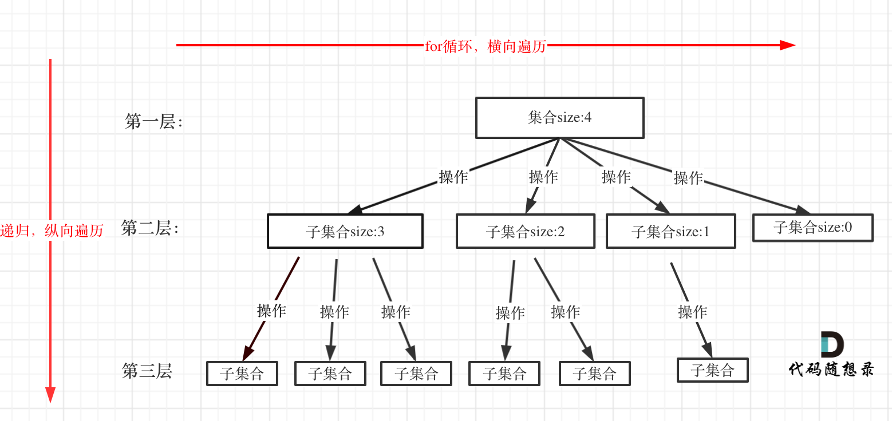

回溯算法定义
回溯法也可以叫做回溯搜索法，它是一种搜索的方式。回溯是递归的副产品，只要有递归就会有回溯。
所以，回溯函数也就是递归函数，指的都是一个函数。
回溯解决的问题
回溯法，一般可以解决如下几种问题：
- 组合问题：N个数里面按一定规则找出k个数的集合
- 切割问题：一个字符串按一定规则有几种切割方式
- 子集问题：一个N个数的集合里有多少符合条件的子集
- 排列问题：N个数按一定规则全排列，有几种排列方式
- 棋盘问题：N皇后，解数独等等
这里再解释一下组合和排列。组合是不强调元素顺序的，排列是强调元素顺序。即组合无序，排列有序。
回溯法解决的问题都可以抽象为树形结构，因为回溯法解决的都是在集合中递归查找子集，集合的大小就构成了树的宽度，递归的深度，都构成的树的深度。递归就要有终止条件，所以必然是一棵高度有限的树（N叉树）。
回溯法模版
回溯函数模板返回值以及参数
回溯算法中函数返回值一般为void。因为回溯算法需要的参数步容易一次性确定下来，所以一般是先写逻辑，然后需要什么参数，就填什么参数。
回溯函数终止条件
既然是树形结构，那么遍历树形结构一定要有终止条件。所以回溯也有要终止条件。什么时候达到了终止条件，树中就可以看出，一般来说搜到叶子节点了，也就找到了满足条件的一条答案，把这个答案存放起来，并结束本层递归。
回溯搜索的遍历过程

for循环就是遍历集合区间，可以理解一个节点有多少个孩子，这个for循环就执行多少次。for循环可以理解是横向遍历，backtracking（递归）就是纵向遍历，这样就把这棵树全遍历完了，一般来说，搜索叶子节点就是找的其中一个结果了。
那么可以写出总体的框架为:
void backtracking(参数) {
if (终止条件) {
存放结果;
return;
}
for (选择：本层集合中元素（树中节点孩子的数量就是集合的大小）) {
处理节点;
backtracking(路径，选择列表); // 递归
回溯，撤销处理结果
}
}组合问题
组合1
力扣题目链接
给定两个整数 n 和 k，返回 1 … n 中所有可能的 k 个数的组合。
示例:
输入: n = 4, k = 2
输出:
[
[2,4],
[3,4],
[2,3],
[1,2],
[1,3],
[1,4],
]
思路
那么参照上面的树，这道题的解题思路如下图：

那么就可以通过回溯算法的三步曲来解决这个问题。
回溯函数模板返回值以及参数
这里要定义两个全局变量，一个用来存放符合条件单一结果，一个用来存放符合条件结果的集合。int型变量startIndex，这个参数用来记录本层递归的中，集合从哪里开始遍历（集合就是[1,…,n] ）。
回溯函数终止条件
path这个数组的大小如果达到k，说明我们找到了一个子集大小为k的组合了，在图中path存的就是根节点到叶子节点的路径。
回溯搜索的遍历过程
for循环每次从startIndex开始遍历，然后用path保存取到的节点i。
所以代码如下：
List<Integer> path = new ArrayList<>();
List<List<Integer>> res = new ArrayList<>();
public List<List<Integer>> combine(int n, int k) {
combineHelper(n, k, 1);
return res;
}
public void combineHelper(int n, int k, int startIndex) {
//终止条件
if (path.size() == k) {
res.add(new ArrayList<>(path));
return;
}
for (int i = startIndex; i <= n; i++) {//控制树的横向遍历
path.add(i);//处理节点
combineHelper(n, k, i + 1);//递归，控制树的纵向遍历，注意下一层搜索要从i+1开始
path.remove(path.size() - 1);//回溯，撤销处理的节点
}
}代码中最难理解的地方就是对树的横向遍历和递归树的纵向遍历，可以手写几个例子就可以清楚到底是如何循环的。
剪枝优化
如果for循环选择的起始位置之后的元素个数 已经不足 我们需要的元素个数了，那么就没有必要搜索了。
接下来看一下剪枝过程
- 已经选择的元素个数：path.size();
- 还需要的元素个数为: k - path.size();
- 在集合n中至多要从该起始位置 : n - (k - path.size()) + 1，开始遍历
为什么有个+1呢，因为包括起始位置，我们要是一个左闭的集合。
举个例子，n = 4，k = 3， 目前已经选取的元素为0（path.size为0），n - (k - 0) + 1 即 4 - ( 3 - 0) + 1 = 2。则for循环变成
for (int i = startIndex; i <= n - (k - path.size) + 1; i++)组合3
找出所有相加之和为 n 的 k 个数的组合。组合中只允许含有 1 - 9 的正整数，并且每种组合中不存在重复的数字。
说明：
- 所有数字都是正整数。
- 解集不能包含重复的组合。
示例 1: 输入: k = 3, n = 7 输出: [[1,2,4]]
示例 2: 输入: k = 3, n = 9 输出: [[1,2,6], [1,3,5], [2,3,4]]
思路
那么就可以通过回溯算法的三步曲来解决这个问题。
回溯函数模板返回值以及参数
这里还是要定义两个全局变量，一个用来存放符合条件单一结果，一个用来存放符合条件结果的集合。int型变量startIndex用来记录下一层for循环搜索的起始位置，（集合就是[1,…,n] ），int型变量sum计算path中的和。
回溯函数终止条件
path这个数组的大小如果达到k并且总和sum等于target，说明我们找到了一个子集大小为k的组合了，在图中path存的就是根节点到叶子节点的路径。
回溯搜索的遍历过程
for循环每次从startIndex开始遍历，然后用path保存取到的节点i，更新sum值。
List<Integer> path = new ArrayList<>(); List<List<Integer>> res = new ArrayList<>(); public List<List<Integer>> combine(int n, int k) { combineHelper(n, k, 1, 0); return res; } public void combineHelper(int target, int k, int startIndex, int sum) { //剪枝操作 if (sum > target) { return; } //终止条件 if (path.size() == k) { if (sum == target) { res.add(new ArrayList<>(path)); return; } } for (int i = startIndex; i <= 9; i++) {//控制树的横向遍历 sum += i; path.add(i);//处理节点 combineHelper(n, k, i + 1);//递归，控制树的纵向遍历，注意下一层搜索要从i+1开始 sum -= i; path.remove(path.size() - 1);//回溯，撤销处理的节点 } }这道题的剪枝是比较容易想出来的，当sum的值大于target的时候就不需要往下遍历直接返回即可。
电话号码的字母组合
给定一个仅包含数字 2-9 的字符串，返回所有它能表示的字母组合。
给出数字到字母的映射如下（与电话按键相同）。注意 1 不对应任何字母。

示例: 输入：”23” 输出：[“ad”, “ae”, “af”, “bd”, “be”, “bf”, “cd”, “ce”, “cf”]。
说明：尽管上面的答案是按字典序排列的，但是你可以任意选择答案输出的顺序。
思路
那么就可以通过回溯算法的三步曲来解决这个问题。
回溯函数模板返回值以及参数
定义两个全局变量，一个用来存放符合条件单一结果，一个用来存放符合条件结果的集合，这里需要注意变量都是字符串，要知道容器的定义。这里需要一个int类型的index，这个index是记录遍历第几个数字了，就是用来遍历digits的（题目中给出数字字符串），同时index也表示树的深度。和上面的startIndex的意义不同。int型变量sum计算path中的和。
回溯函数终止条件
例如输入用例”23”，两个数字，那么根节点往下递归两层就可以了，叶子节点就是要收集的结果集。那么终止条件就是如果index 等于 输入的数字个数
回溯搜索的遍历过程
首先要取index指向的数字，并找到对应的字符集（手机键盘的字符集）。然后for循环来处理这个字符集，这里for循环，可不像是前面从startIndex开始遍历的。
因为本题每一个数字代表的是不同集合，也就是求不同集合之间的组合，而前两道题都是求同一个集合中的组合！
StringBuilder path = new StringBuilder();
List<String> res = new ArrayList<>();
public List<String> letterCombinations(String digits) {
if (digits == null || digits.length() == 0) {
return res;
}
Strinf[] letterMap = new String(){
"", // 0
"", // 1
"abc", // 2
"def", // 3
"ghi", // 4
"jkl", // 5
"mno", // 6
"pqrs", // 7
"tuv", // 8
"wxyz", // 9
}
combine(digits, 0, letterMap);
return res;
}
public void combineHelper(String digits, int index, String[] letterMap) {
//剪枝操作
if (sum > target) {
return;
}
//终止条件
if (index == digits.length()) {
res.add(path.toString());
return;
}
}
String temp = letterMap[digits.charAt(index) - '0'];
for (int i = 0; i < temp.length(); i++) {//控制树的横向遍历
path.append(temp.charAt(i));//处理节点
combineHelper(n, k, index + 1);//递归，控制树的纵向遍历，注意下一层搜索要从i+1开始
path.deleteCharAt(path.length() - 1);//回溯，撤销处理的节点
}
}组合总和
给定一个无重复元素的数组 candidates 和一个目标数 target ，找出 candidates 中所有可以使数字和为 target 的组合。
candidates 中的数字可以无限制重复被选取。
说明：
- 所有数字（包括 target）都是正整数。
- 解集不能包含重复的组合。
示例 1： 输入：candidates = [2,3,6,7], target = 7, 所求解集为： [ [7], [2,2,3] ]
示例 2： 输入：candidates = [2,3,5], target = 8, 所求解集为： [ [2,2,2,2], [2,3,3], [3,5] ]
思路
那么就可以通过回溯算法的三步曲来解决这个问题。
回溯函数模板返回值以及参数
这里还是要定义两个全局变量，一个用来存放符合条件单一结果，一个用来存放符合条件结果的集合。int型变量startIndex用来记录下一层for循环搜索的起始位置，（集合就是[1,…,n] ），int型变量sum计算path中的和。
本题还需要startIndex来控制for循环的起始位置，对于组合问题，什么时候需要startIndex呢？
如果是一个集合来求组合的话，就需要startIndex，例如：77.组合，216.组合总和III。
如果是多个集合取组合，各个集合之间相互不影响，那么就不用startIndex，例如：17.电话号码的字母组合
回溯函数终止条件
从叶子节点可以清晰看到，终止只有两种情况，sum大于target和sum等于target。
回溯搜索的遍历过程
单层for循环依然是从startIndex开始，搜索candidates集合。
List<Integer> path = new ArrayList<>();
List<List<Integer>> res = new ArrayList<>();
public List<List<Integer>> combinationSum(int[] candidates, int target) {
combineHelper(candidates, target, 0);
return res;
}
public void combine(int[] candidates, int target, int startIndex {
if (target == 0) {
res.add(new ArrayList<>(path));
return;
}
for (int i = startIndex, i < candidates.length; i++) {
if (candidates[i] > target) break;//如果不进行判断，会无限的循环下去，因为传入的是i而不是i+1，导致栈空间泄漏
path.add(candidates[i]);
combine(candidates, target - candidates[i], i);//本题要求同一个数字可以无限制重复选去，所以传入的就是i
path.remove(path.size() - 1);
}
}组合总和2
给定一个数组 candidates 和一个目标数 target ，找出 candidates 中所有可以使数字和为 target 的组合。
candidates 中的每个数字在每个组合中只能使用一次。
说明： 所有数字（包括目标数）都是正整数。 解集不能包含重复的组合。
示例 1: 输入: candidates = [10,1,2,7,6,1,5], target = 8, 所求解集为: [ [1, 7], [1, 2, 5], [2, 6], [1, 1, 6] ]
示例 2: 输入: candidates = [2,5,2,1,2], target = 5, 所求解集为: [ [1,2,2], [5] ]
思路
本题的难点在于：集合（数组candidates）有重复元素，但还不能有重复的组合。所以我们需要去重。去重，其实就是使用过的元素不能重复选取。
组合问题可以抽象为树形结构，那么“使用过”在这个树形结构上是有两个维度的，一个维度是同一树枝上使用过，一个维度是同一树层上使用过。回看一下题目，元素在同一个组合内是可以重复的，怎么重复都没事，但两个组合不能相同。
所以去重的是同一树层上的“使用过”，同一树枝上的都是一个组合里的元素，不用去重。
所以实现去重我们要在for循环里去实现。我们使用startIndex去记录下一层for循环的起始位置，那么当i > startIndex的时候说明遍历到了树同层的下一个元素，这个时候再判断一下i - 1和i的元素值是否相同，相同则说明元素重复，不同则继续纵向遍历。那么代码实现如下：
List<Integer> path = new ArrayList<>();
List<List<Integer>> res = new ArrayList<>();
public List<List<Integer>> combinationSum(int[] candidates, int target) {
combineHelper(candidates, target, 0);
return res;
}
public void combine(int[] candidates, int target, int startIndex {
if (target == 0) {
res.add(new ArrayList<>(path));
return;
}
for (int i = startIndex, i < candidates.length; i++) {
if (i > startIndex && candidates[i - 1] == candidates[i]) {
continue;
}
path.add(candidates[i]);
combine(candidates, target - candidates[i], i + 1);//本题要求数字不可重复，所以传入的就是i + 1
path.remove(path.size() - 1);
}
}分割问题
分割回文串
给定一个字符串 s，将 s 分割成一些子串，使每个子串都是回文串。
返回 s 所有可能的分割方案。
示例: 输入: “aab” 输出: [ [“aa”,”b”], [“a”,”a”,”b”] ]
思路

切个问题还是可以画成树进行解决，下面直接给出代码，依旧是用三步曲解决问题。
//这里用来记录路径使用双端队列
Deque<String> path = new LinkedList<>();
List<List<String>> res = new ArrayList<>();
public List<List<String>> partition(String s) {
combine(s, 0);
return res;
}
public void combine(String s, int startIndex) {
if (startIndex >= s.length()) {//当起始线超过了数组长度，说明已经有结果了
res.add(path);
return;
}
for (int i = startIndex; i < s.length(); i++) {
if (isPalindrome(s, startIndex, i)) {//是回文串，添加到path中去
String temp = s.subString(startIndex, i + 1);//把回文子串截断，subString是左开右闭，所以+1
path.addLast(temp);
} else {
continue;//不是回文子串，继续循环
}
combine(s, i + 1);
path.removeLast();
}
}
public boolean isPalindrome(String s, int start, int end) {
for (int i = start, j = end; i < j; i++, j--) {
if (s.charAt(i) != s.charAt(j)) {
return fasle;
}
}
return true;
}复原IP地址
给定一个只包含数字的字符串，复原它并返回所有可能的 IP 地址格式。
有效的 IP 地址 正好由四个整数（每个整数位于 0 到 255 之间组成，且不能含有前导 0），整数之间用 ‘.’ 分隔。
例如：”0.1.2.201” 和 “192.168.1.1” 是 有效的 IP 地址，但是 “0.011.255.245”、”192.168.1.312” 和 “192.168@1.1“ 是 无效的 IP 地址。
示例 1：
- 输入：s = “25525511135”
- 输出：[“255.255.11.135”,”255.255.111.35”]
思路
回溯三步曲
递归参数
这里依然需要有startIndex作为下一层for循环的起始位置，除此之外还需要一个pointNum作为终止条件。
终止条件
这里不能使用分割线到列表末尾判断，需要根据点的数量，点的数量为3则代表已经分成了4段。
单层搜索逻辑
在for循环中首先进行截取，然后判断截取的子串是否合法，合法就在子串末尾加符号.表示已分割，不合法则结束本层循环。
List<String> res = new ArrayList<>();
public List<String> restoreIpAddresses(String s) {
combine(s, 0, 0);
return res;
}
public void combine(String s, int startIndex, int pointNum) {
if (pointNum == 3) {
//判断第四段是否合法
if (isValid(s, startIndex, s.length() - 1)) {
res.add(s);
}
return;
}
for (int i = startIndex; i < s.length(); i++) {
if (isValid(s, startIndex, i)) {
s = s.substring(startIndex, i + 1) + "." + s.substring(i + 1);//子串合法插入符号.
pointNum++;
combine(s, i + 2, pointNum);//插入符号后，下一个子串的起始位置是i+2
pointNum--;//回溯，取消插入符号
s = s.substring(startIndex, i + 1) + s.substring(i + 2);//回溯，取消插入符号
} else {
break;
}
}
}
public boolean isValid(String s, int start, int end) {
if (start > end) {
return false;
}
//段位以0为开头的数字不合法
if (s.charAt(start) == '0' && start != end) {
return false;
}
//判断值是否大于255
String temp = s.substring(start, end + 1);
if (Integer.valueOf(temp) > 255) {
return false;
}
//判断是否出现数字以外其他字符
for (int i = start; i <= end; i++) {
if(s.charAt(i) > '9' || s.charAt(i) < '0') {
return false;
}
}
return true;
}子集问题
子集1
给定一组不含重复元素的整数数组 nums，返回该数组所有可能的子集（幂集）。
说明：解集不能包含重复的子集。
示例: 输入: nums = [1,2,3] 输出: [ [3], [1], [2], [1,2,3], [1,3], [2,3], [1,2], [] ]
思路
如果把子集问题、组合问题、分割问题都抽象为一棵树的话，那么组合问题和分割问题都是收集树的叶子节点，而子集问题是找树的所有节点

继续我们的回溯三步曲
递归参数
需要一个数组path为子集手机元素，二维数组res存放子集组合
终止条件
剩余集合为空的时候，就是叶子节点。
单层循环逻辑
直接收集子集元素就可以
List<Integer> path = new ArrayList<>();
List<List<Integer>> res = new ArrayList<>();
public List<List<Integer>> subsets(int[] nums) {
backTracking(nums, 0);
return res;
}
public void backTracking(int[] nums, int startIndex) {
res.add(new ArrayList<>(path));//遍历这个树的时候，把所有节点都记录下来，就是要求的子集集合
if (startIndex >= nums.length) {
return;
}
for (int i = startIndex; i < nums.length; i++) {
path.add(nums[i]);
backTracking(nums, i + 1);
path.remove(path.size() - 1);
}
}子集II
给定一个可能包含重复元素的整数数组 nums，返回该数组所有可能的子集（幂集）。
说明：解集不能包含重复的子集。
示例:
- 输入: [1,2,2]
- 输出: [ [2], [1], [1,2,2], [2,2], [1,2], [] ]
思路
这道题的难度在于给定数组中可能出现重复元素，但要求解集不能重复。这题和组合2的要求是一样的，同一层级中不能出现重复元素，但是同一个树枝可以出现重复元素。在操作时需要对数组进行排列。
List<Integer> path = new ArrayList<>();
List<List<Integer>> res = new ArrayList<>();
public List<List<Integer>> subsetsWithDup(int[] nums) {
res.add(new ArrayList<>());//子集永远包含一个空集
if (nums.length == 0 || nums == null) {
return res;
}
Arrays.sort(nums);//需要对数组排序！！
backTracking(nums, 0);
return res;
}
public void backTracking(int[] nums, int startIndex) {
if (startIndex >= nums.length) {//可以省略，因为当startIndex超出长度后for循环也结束了
return;
}
for (int i = startIndex; i < nums.length; i++) {
if (i > startIndex && nums[i - 1] == nums[i]) {//和组合2解决方法一致，同一层上的去重
continue;
}
path.add(nums[i]);
res.add(new ArrayList<>(path));//结果要求是所有子集
backTracking(nums, i + 1);
path.remove(path.size() - 1);
}
}递增子序列
给定一个整型数组, 你的任务是找到所有该数组的递增子序列，递增子序列的长度至少是2。
示例:
- 输入: [4, 6, 7, 7]
- 输出: [[4, 6], [4, 7], [4, 6, 7], [4, 6, 7, 7], [6, 7], [6, 7, 7], [7,7], [4,7,7]]
说明:
- 给定数组的长度不会超过15。
- 数组中的整数范围是 [-100,100]。
- 给定数组中可能包含重复数字，相等的数字应该被视为递增的一种情况。
思路
这道题与上面的子集II问题比较像，又是取子集又是去重，子集II我们通过将数组进行排序再加一个判断来达到去重的目的，但是本题是不能进行排序的。本题求自增子序列，是不能对原数组经行排序的，排完序的数组都是自增子序列了。
那么回溯三步曲应该是
递归参数
需要一个数组path为子集收集元素，二维数组res存放子集组合，int 类型的startIndex表示下一层for循环的起始位置
终止条件
终止条件判断startIndex是否大于nums.length依旧可以省略。当path.size() > 1时就表明了有结果，就可以添加到res。
单层循环逻辑
这里不同的是不能像上一问题那样判断重复，所以需要使用一个哈希表用来查看值在同一层是否被使用过。然后判断一下大小。
List<Integer> path = new ArrayList<>();
List<List<Integer>> res = new ArrayList<>();
public List<List<Integer>> permute(int[] nums) {
boolean[] visited = new boolean[nums.length];
backTracking(nums, visited);
return res;
}
public void backTracking(int[] nums, boolean[] visited) {
if (path.size() == nums.length) {
res.add(new ArrayList<>(path));
return;
}
for (int i = 0; i < nums.length; i++) {
if (visited[i] == true) {
continue;
}
visited[i] = true;
path.add(nums[i]);
backTracking(nums, visited);
path.remove(path.size() - 1);
visited[i] = false;
}
}全排列II
给定一个可包含重复数字的序列 nums ，按任意顺序 返回所有不重复的全排列。
示例 1：
- 输入：nums = [1,1,2]
- 输出： [[1,1,2], [1,2,1], [2,1,1]]
思路
这道题不同的地方就是要求不能有重复的队列，这个问题老生常谈，就是在同一层中要求不能有重复的元素出现就行，和上面就差一个判断。判断之前一定要将数组重新排序
List<Integer> path = new ArrayList<>();
List<List<Integer>> res = new ArrayList<>();
public List<List<Integer>> permuteUnique(int[] nums) {
if (nums.length == 0 || nums == null) {
return res;
}
Arrays.sort(nums);
boolean[] visited = new boolean[nums.length];
backTracking(nums, visited);
return res;
}
public void backTracking(int[] nums, boolean[] visited) {
if (path.size() == nums.length) {
res.add(new ArrayList<>(path));
return;
}
for (int i = 0; i < nums.length; i++) {
// used[i - 1] == true，说明同⼀树⽀nums[i - 1]使⽤过
// used[i - 1] == false，说明同⼀树层nums[i - 1]使⽤过
//上述两种都可以便已通过，只不过第二种效率较高，是进行数层级别的判断
// 如果同⼀树层nums[i - 1]使⽤过则直接跳过
if (i > 0 && nums[i - 1] == nums[i] && visited[i - 1] == false) {
continue;
}
//如果同⼀树⽀nums[i]没使⽤过开始处理
if (visited[i] == false) {
visited[i] = true;
path.add(nums[i]);
backTracking(nums, visited);
path.remove(path.size() - 1);
visited[i] = false;
}
}
}N皇后问题
n 皇后问题 研究的是如何将 n 个皇后放置在 n×n 的棋盘上，并且使皇后彼此之间不能相互攻击。
给你一个整数 n ，返回所有不同的 n 皇后问题 的解决方案。
每一种解法包含一个不同的 n 皇后问题 的棋子放置方案，该方案中 ‘Q’ 和 ‘.’ 分别代表了皇后和空位。
- 输入：n = 4
- 输出：[[“.Q..”,”…Q”,”Q…”,”..Q.”],[“..Q.”,”Q…”,”…Q”,”.Q..”]]
- 解释：如上图所示，4 皇后问题存在两个不同的解法。
思路
约束条件：
- 不能同行
- 不能同列
- 不能同斜线
二维矩阵中矩阵的高就是这棵树的高度，矩阵的宽就是树形结构中每一个节点的宽度。
#include<iostream>
#include<vector>
#include<string.h>
using namespace std;
class Solution {
public:
vector<vector<string>> result;
vector<vector<string>> solveNQueens(int n) {
result.clear();
std::vector<std::string> chessboard(n, std::string(n, '.'));
backTracking(n, 0, chessboard);
return result;
}
bool isValid(int row, int col, vector<string> &chessboard, int n) {
//检查列
for (int i = 0; i < row; i++) {
if (chessboard[i][col] == 'Q') {
return false;
}
}
//检查45度
for (int i = row - 1, j = col - 1;j >= 0 && i >= 0; j--, i--) {
if (chessboard[i][j] == 'Q') {
return false;
}
}
//检查135斜线
for (int i = row - 1, j = col + 1; i >= 0 && j < n; i--, j++) {
if (chessboard[i][j] == 'Q') {
return false;
}
}
return true;
}
void backTracking(int n, int row, vector<string> &chessboard) {
if (row == n) {
result.push_back(chessboard);
return;
}
for (int col = 0; col < n; col++) {
if (isValid(row, col, chessboard, n)) {
chessboard[row][col] = 'Q';
backTracking(n, row + 1, chessboard);
chessboard[row][col] = '.';
}
}
}
};